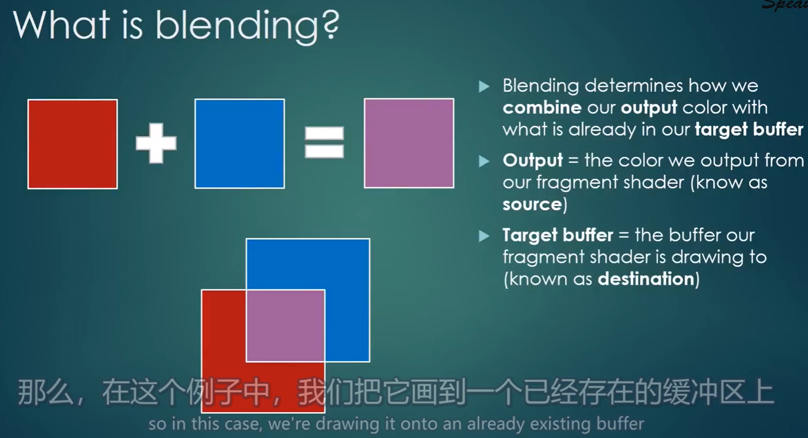

10 纹理
GPU所支持的纹理个数¶
GPU所支持的纹理个数
- 在Windows上，典型的现代显卡，有32个纹理插槽（textures slots）
- 在移动设备上，比如安卓或者iPhone，可能有8个插槽，这取决于显卡、以及OpenGL的具体实现
垂直翻转纹理¶
OpenGL的纹理像素是从 左下角 开始的，不是在左上角
- OpenGL纹理的左下角坐标是(0, 0)
- OpenGL纹理的右上角坐标是(1, 1)
然而png图像的坐标是从 左上角 开始的，因此需要对png图像做垂直（上下）翻转之后，才能丢给OpenGL。
如何翻转图像
- 可以自己手写代码，将像素调换一下位置
stb_image第三方库支持在加载图像时，垂直翻转纹：stbi_set_flip_vertically_on_load(1);
在Shader中使用纹理¶
1. 在顶点数据中添加纹理坐标¶
//顶点数据
float positions[] = {
//顶点位置xy, UV坐标xy
-0.5f, -0.5f, 0.0f, 0.0f, // 0
0.5f, -0.5f, 1.0f, 0.0f, // 1
0.5f, 0.5f, 1.0f, 1.0f, // 2
-0.5f, 0.5f, 0.0f, 1.0f // 3
};
//顶点缓冲区
VertexBuffer vb(positions, 4 * 4 * sizeof(float));
2. 读取纹理，并通过OpenGL传入GPU¶
Texture texture("res/textures/ChernoLogo.png");
texture.Bind(0); //绑定第0个纹理槽
shader.SetUniform1i("u_Texture", 0); //传值给着色器，将使用纹理槽的序号给u_Texture变量
Texture类的具体实现
class Texture
{
private:
unsigned int m_RendererID;
std::string m_FilePath;
unsigned char* m_LocalBuffer; //内存当中存储纹理
int m_Width, m_Height;
int m_BPP; //bits per-pixel, 每个像素的比特大小
public:
Texture(const std::string& path);
~Texture();
void Bind(unsigned int slot = 0) const;
void Unbind() const;
inline int GetWidth() const { return m_Width; }
inline int GetHeight() const { return m_Height; }
};
#include "Texture.h"
#include "vender/stb_image/stb_image.h"
Texture::Texture(const std::string& path)
:m_RendererID(0), m_FilePath(path), m_LocalBuffer(nullptr), m_Width(0), m_Height(0), m_BPP(0)
{
stbi_set_flip_vertically_on_load(1); //垂直翻转纹理
m_LocalBuffer = stbi_load(path.c_str(), &m_Width, &m_Height, &m_BPP, 4);
//想要使用RGBA，则传入4
GLCall(glGenTextures(1, &m_RendererID)); //生成一个纹理
GLCall(glBindTexture(GL_TEXTURE_2D, m_RendererID)); //绑定纹理
GLCall(glTexParameteri(GL_TEXTURE_2D, GL_TEXTURE_MIN_FILTER, GL_LINEAR)); //缩小过滤器 线性重采样
GLCall(glTexParameteri(GL_TEXTURE_2D, GL_TEXTURE_MAG_FILTER, GL_LINEAR)); //放大过滤器 线性重采样
/*“嵌入模式”or“环绕模式”
1. GL_CLAMP_TO_EDGE 嵌入 不希望它扩大区域
2. 平铺
*/
GLCall(glTexParameteri(GL_TEXTURE_2D, GL_TEXTURE_WRAP_S, GL_CLAMP_TO_EDGE)); //水平环绕(S相当于X)
GLCall(glTexParameteri(GL_TEXTURE_2D, GL_TEXTURE_WRAP_T, GL_CLAMP_TO_EDGE)); //垂直环绕(T相当于Y)
//注：如果不设置这四个参数，会得到一个黑色的纹理。因为它们没有默认值
//将数据拷贝到GPU上
GLCall(glTexImage2D(
GL_TEXTURE_2D, //纹理类型
0, //level=0，表示它不是一个复合纹理
GL_RGBA8, //你希望OpenGL在GPU中如何存储你的纹理 => 按照RGBA8来存储
m_Width, m_Height, //宽高
0, //像素边框=0
GL_RGBA, //传给GPU数据的格式是什么 => RGBA四个通道
GL_UNSIGNED_BYTE, //传给GPU数据的类型 => 每个通道是一个unsigned byte
m_LocalBuffer //数据（也可以传nullptr，这表示先分配显存，到后面再拷贝）
));
GLCall(glBindTexture(GL_TEXTURE_2D, 0)); //解除绑定
if (m_LocalBuffer)
{
stbi_image_free(m_LocalBuffer); //删除内存中的数据
m_LocalBuffer = nullptr;
}
}
Texture::~Texture()
{
GLCall(glDeleteTextures(1, &m_RendererID));
if (m_LocalBuffer)
{
stbi_image_free(m_LocalBuffer); //删除内存中的数据
m_LocalBuffer = nullptr;
}
}
void Texture::Bind(unsigned int slot) const
{
//激活第slot个纹理槽（这意味着下一个纹理将绑定到第slot个纹理槽上）
GLCall(glActiveTexture(GL_TEXTURE0 + slot));
//将m_RendererID纹理，绑定到激活的槽里（也就是第slot个纹理槽中）
GLCall(glBindTexture(GL_TEXTURE_2D, m_RendererID));
//注：虽然纹理槽范围是[GL_TEXTURE0, GL_TEXTURE31]，但不一定你的显卡支持，这还是取决于你的显卡
// 有32个，是因为32是OpenGL规格允许的最大值
}
void Texture::Unbind() const
{
GLCall(glBindTexture(GL_TEXTURE_2D, 0));
}
3. 在Shader中使用纹理¶
#shader vertex
#version 330 core
//顶点数据
layout(location = 0)in vec4 position; //顶点位置（注意，这里是vec4）
layout(location = 1)in vec2 texCoord; //UV坐标
out vec2 v_TexCoord; //输出变量。顶点着色器的输出，将会作为片元着色器的输入
void main()
{
gl_Position = position;
v_TexCoord = texCoord;
};
#shader fragment
#version 330 core
layout(location = 0)out vec4 color;
in vec2 v_TexCoord; //由顶点着色器传入
uniform sampler2D u_Texture;
//sampler2D为二维的纹理图
//OpenGL只需设置纹理槽的Id即可，sampler2D即会取到对应的纹理
void main()
{
vec4 texColor = texture(u_Texture, v_TexCoord); //对指定纹理坐标进行采样
color = texColor;
};
4. 添加纹理混合¶
//# 定义OpenGL如何混合alpha像素
GLCall(glEnable(GL_BLEND)); //启用混合
GLCall(glBlendFunc(GL_SRC_ALPHA, GL_ONE_MINUS_SRC_ALPHA)); //RGBA = SrcRgba * GL_SRC_ALPHA + DestRgba * GL_ONE_MINUS_SRC_ALPHA
纹理混合¶
引言¶
在图形学中，不可避免要渲染一些部分或完全透明的东西，例如
- 有色玻璃：只能透过某种颜色
- 具有透明通道的图片：透明的像素不渲染
默认情况下，OpenGL不执行任何混合，会将图片渲染成不透明的东西。
- 如左图，如果你没有告诉OpenGL 处理透明度的策略 ，那么它渲染的结果将不会是你想要的
- 右图就正确设置了处理透明度的策略，结果是正确的


什么是混合？¶
例如，在同一个位置上有两块有色玻璃，一个是红色，一个是蓝色，蓝色玻璃压在红色玻璃上面
- 因为蓝色压盖在红色玻璃上面，因此渲染顺序是：先红色玻璃，再蓝色玻璃
- 首先，先渲染红色玻璃，渲染结果肯定是红色。然后将其存储在目标缓冲区(Target buffer)当中。在混合的语境中，之前渲染的旧颜色值一般称为destination（目标）
- 其次，渲染蓝色玻璃，渲染结果肯定是蓝色，此时就遇到了如何与原先颜色（红色）混合的问题。在混合的语境中，当前渲染的颜色值被称为source（源），或输出颜色。

因此，混合决定了如何将 输出颜色(output) 与 之前的颜色(target buffer) 进行结合。
启用混合¶
默认是禁用
glEnable(GL_BLEND)glEnable(GL_BLEND)
混合色计算方式¶
指定混合色计算方式的API：glBlendFunc(src_factor, dest_factor)
其对应的计算公式：两个颜色的混合结果 = src * src_factor + dest * dest_factor
src_factor：source的因子，默认为GL_ONEdest_factor：dest的因子，默认为GL_ZERO
事实上，src_factor、dest_factor的因子也可以只作用于RGB、RGBA、R、G、B、RG等等。
例：glBlendFunc(GL_ONE, GL_ZERO)
GL_ONE：取颜色的RGBA的通道，然后×1GL_ZERO：取颜色的RGBA的通道，然后×0- 因此，计算公式为
result = src * 1 + dest * 0 - 事实上，计算结果是新的渲染结果，它会把旧的渲染结果进行覆盖
混合模式¶
指定混合的模式：glBlendEquation(mode)
mode：如何组织src和dest的颜色，也就是上面公式中的运算符，默认是GL_FUNC_ADD，也就是+号
混色示例¶
一、alpha=0，则保留dest的颜色
src_factor = GL_SRC_ALPHAdest_factor = GL_ONE_MINUS_SRC_ALPHAmode = GL_FUNC_ADD

二、部分透明
src = (1.0, 1.0, 1.0, 0.5)白色玻璃，但透明度0.5dest = (1.0, 0.0, 1.0, 1.0)洋红色长方形